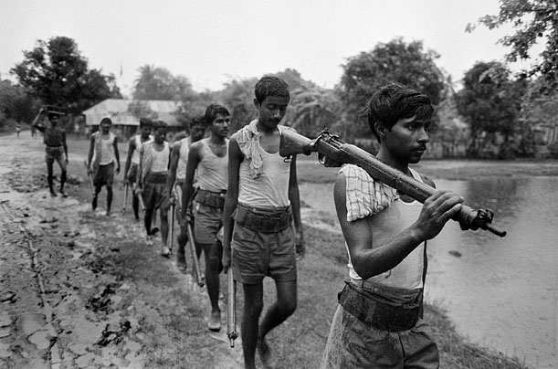
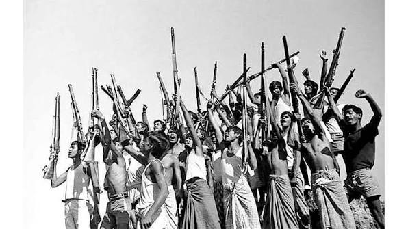
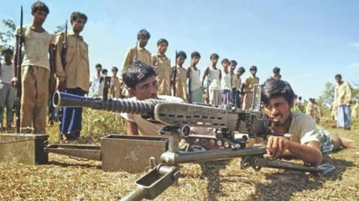
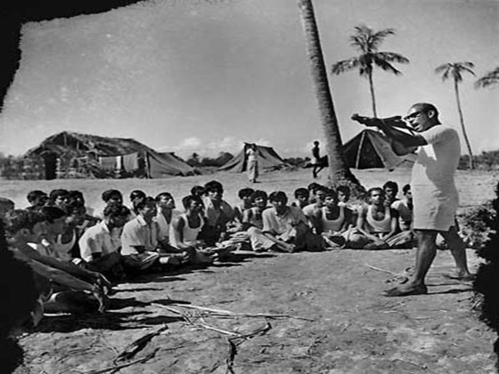
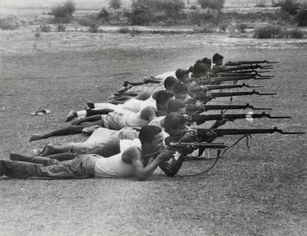

Welcome to the Liberation War Archive
Operation Searchlight (March 25, 1971): The West Pakistan military launched a brutal crackdown on civilians, students, and intellectuals in Dhaka, starting the Bangladesh genocide
(March 26, 1971): Independence was proclaimed, and Bengali fighters formed the Mukti Bahini guerrilla force to fight the Pakistan Army.
The Bangladesh Liberation War was an armed conflict between Bengali nationalists in East Pakistan (now Bangladesh) and the Pakistani government, based in West Pakistan. Fighting began on March 26, 1971, a day after West Pakistani government forces launched a crackdown in East Pakistan to quash protests calling for Bengali political autonomy. They went on to perpetrate widespread atrocities against East Pakistan’s civilian population. In response, civilian insurgents and Bengali military defectors from the Pakistan Army began a guerrilla campaign against West Pakistani troops and pro-Pakistani militias. The rebels received training and military support from India, whose involvement escalated into a separate war with Pakistan in December 1971. The India-Pakistan war ended on December 16, when Pakistani forces in East Pakistan surrendered, effectively securing victory for the Bangladeshi liberation movement as well. The Bangladesh Liberation War and the India-Pakistan War of 1971 resulted in the deaths of between 300,000 and 3,000,000 people and the displacement of tens of millions of people from what is now Bangladesh.
Bangladesh's history about Liberation War
The Bangladesh Liberation War was an armed conflict between Bengali nationalists in East Pakistan (now Bangladesh) and the Pakistani government, based in West Pakistan. Fighting began on March 26, 1971, a day after West Pakistani government forces launched a crackdown in East Pakistan to quash protests calling for Bengali political autonomy. They went on to perpetrate widespread atrocities against East Pakistan’s civilian population. In response, civilian insurgents and Bengali military defectors from the Pakistan Army began a guerrilla campaign against West Pakistani troops and pro-Pakistani militias. The rebels received training and military support from India, whose involvement escalated into a separate war with Pakistan in December 1971. The India-Pakistan war ended on December 16, when Pakistani forces in East Pakistan surrendered, effectively securing victory for the Bangladeshi liberation movement as well. The Bangladesh Liberation War and the India-Pakistan War of 1971 resulted in the deaths of between 300,000 and 3,000,000 people and the displacement of tens of millions of people from what is now Bangladesh.
This archive is dedicated to preserving the history and memories of the Liberation War. Explore our collection of documents, interviews, and photographs to learn more about this significant period in history.
Important Documents
• Proclamation of Independence (Swadhinata Patra): Issued on April 10, 1971, by the provisional government of the People's Republic of Bangladesh (Mujibnagar Government). It formally established the sovereign republic and set the legal continuity of the state from March 26, 1971.
• Constitution of Bangladesh: The Constitution of Bangladesh was adopted on November 4, 1972, and came into effect on December 16, 1972. It established the legal framework for the newly independent nation and enshrined fundamental rights and principles of governance.
Proclaimed on March 26, 1971, initially announced via radio by local leaders like M.A. Hannan in Chittagong on behalf of Bangabandhu Sheikh Mujibur Rahman, asserting the independence of Bangladesh following the launch of Operation Searchlight.
Interviews

Guerrilla Operations
Fighters from specific sectors (such as Sector 2, Sector 3, and Sector 8) detail ambushes against the Pakistan Army, training camps in India, and the tactical role of urban guerrilla units like the Crack Platoon

Sector Combat
Interviews with figures like Rokeya Kabir highlight the active roles of women as intelligence gatherers, couriers, and armed resistance participants, moving past the narrow narrative of victimhood.

Women's Contributions
This is a wider card with supporting text below as a natural lead-in to additional content. This card has even longer content than the first to show that equal height action.

Civilian and Witness Experiences
Fighters from specific sectors (such as Sector 2, Sector 3, and Sector 8) detail ambushes against the Pakistan Army, training camps in India, and the tactical role of urban guerrilla units like the Crack Platoon

Women's Contributions
Interviews with figures like Rokeya Kabir highlight the active roles of women as intelligence gatherers, couriers, and armed resistance participants, moving past the narrow narrative of victimhood.

Civilian and Witness Experiences
This is a wider card with supporting text below as a natural lead-in to additional content. This card has even longer content than the first to show that equal height action.
Photographs

